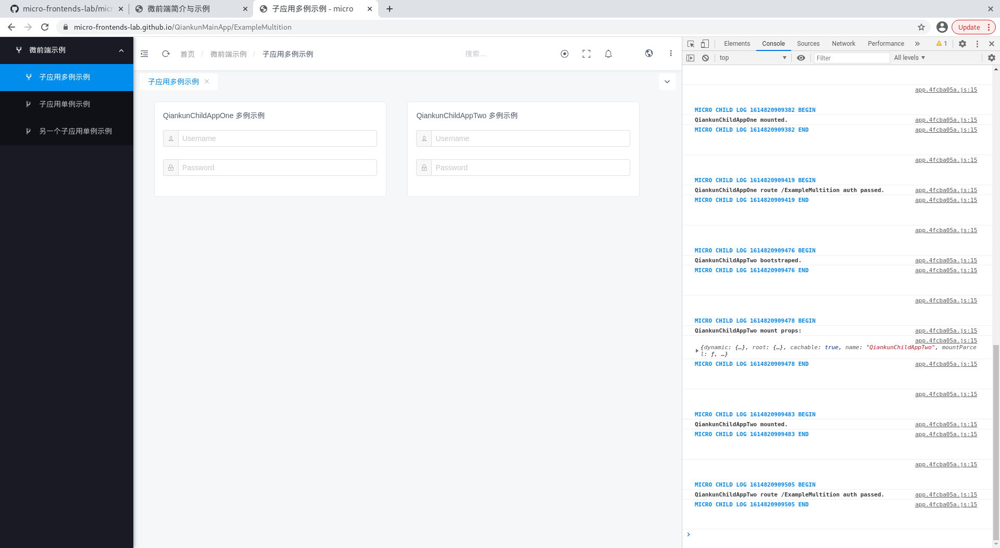

2020/02/28
微前端的思想与发展现状
实现示例
可预见的变化
The idea behind Micro Frontends is to think about a website or web app as a composition of features which are owned by independent teams. Each team has a distinct area of business or mission it cares about and specialises in. A team is cross functional and develops its features end-to-end, from database to user interface.
______ micro-frontends.org
Be Technology Agnostic
Each team should be able to choose and upgrade their stack without having to coordinate with other teams. Custom Elements are a great way to hide implementation details while providing a neutral interface to others.
Isolate Team Code
Don’t share a runtime, even if all teams use the same framework. Build independent apps that are self contained. Don’t rely on shared state or global variables.
Establish Team Prefixes
Agree on naming conventions where isolation is not possible yet. Namespace CSS, Events, Local Storage and Cookies to avoid collisions and clarify ownership.
Favor Native Browser Features over Custom APIs
Use Browser Events for communication instead of building a global PubSub system. If you really have to build a cross team API, try keeping it as simple as possible.
Build a Resilient Site
Your feature should be useful, even if JavaScript failed or hasn’t executed yet. Use Universal Rendering and Progressive Enhancement to improve perceived performance.
技术栈的独立
团队的纵向切分
服务的分布式部署
产品的增量升级
整体架构复杂度攀升
社区生态不成熟
多技术栈下网络及性能压力上升
意外的运行时冲突
使用体验不连贯
微前端对团队架构的解耦价值远大于其自身的技术价值。
对于小型、高度协作的团队和相对简单的产品来说，微前端的优势相比代价来说就很不明显了，技术复杂度的攀升会导致迭代效率的直线下降。
而对于大型、功能众多的产品和许多较独立的团队共同开发的情况来说，微前端的好处就比较突出，可以较好地实现从开发到运维的团队纵向切分， 便于不同团队间业务和技术的分离。
服务端模版拼装
子应用提供模版片段，主应用拼装。
构建时集成
子应用按照npm package发布，主应用构建时安装集成。
Iframe运行时集成
子应用提供入口，主应用加载嵌入。
Javascript/Web组件运行时集成
子应用提供入口，主应用加载调度。
路由系统的融合
运行时的隔离
应用间的通信
共享依赖的提取
访问 https://micro-frontends-lab.github.io/QiankunMainApp 可预览一个基于真实项目抽取出来的微前端应用。该应用是一个单页应用， 通过在运行时调度部署在不同静态服务下的子应用进行组合，实现子应用的集成。
访问 https://github.com/micro-frontends-lab 可详细了解该应用实现过程中的相关类库和源码。
qiankun 2.0的升级
Web Components在微前端生态的崛起
微前端架构下依赖管理方式的演变
服务端渲染对微前端架构的影响